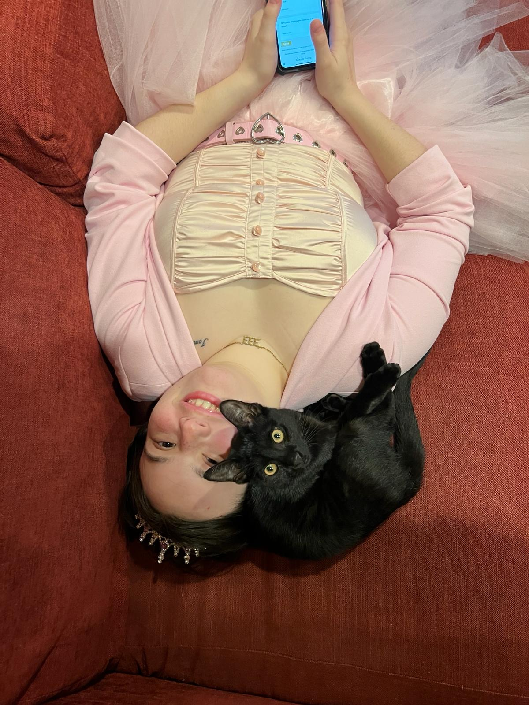
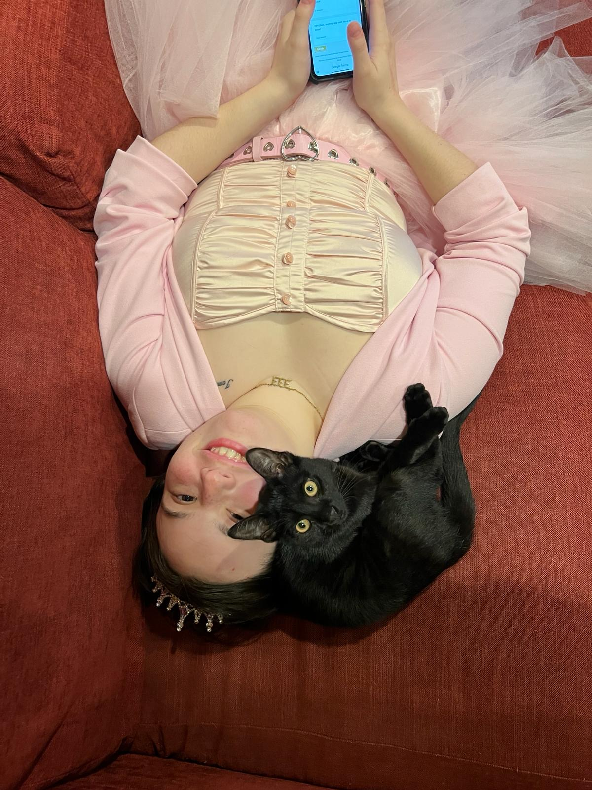

Cat VS. dog
Oct 2, 2024
Just another afternoon...
A Discovery #2
Sep 27, 2024
I have been observing my humans drop their clothes into this square shaped hole and I decided to investigate. Turns out it's some kind of narrow black whole. I still can't figure out where the clothes are going. We might never know. At least it has a comfy ledge!
Uninvited
Sep 18, 2024
I come in from eating my dinner...and some pussy(cat) is hogging MY human. Couldn't Stevie's human drop her off with some other family while she went on her date??
The Answer
Sep 3, 2024
What do cats do when their owners aren't at home? We dim the lights, turn on the tv, and watch whatever is on Roku for 5 hours. I'm currently getting into Bridgerton and completing my second full watch of Schitts Creek. Bobbi is a huge fan of Scooby Doo Where are You? and any true crime series.
Sharing is caring
Aug 25, 2024
My big sister Bobbi sure loves boxes. She like to burrow inside them like they're beds. What she doesn't love is sharing them. C'mon Bobbers! We both know our humans didn't buy them only for you to hog them.
A Discovery
Aug 21, 2024
Today, I followed one of my humans into a glass closet where water falls from the ceiling! Sometimes it falls fast, sometimes slowly. Sometimes it's hot and other times cold. What is this magic?
The "great" outdoors
Aug 16, 2024
Being outside would be a lot more fun if Amelia make me didn't wear this stupid harness. What does she think I am, a toddler?
My Cousin
June 21, 2024
My Cousin Stevie came to stay with us! Her human is on vacation. I spent the whole weekend getting to know her and, of course, letting her know that I am the leader of this house by tackling her to the ground and biting her neck. Next time, stay out of my sink Stevie!
Family vacation
June 7, 2024
My humans took me and my siblings on a trip to this cabin in the woods. It was really big. I got to climb ceiling beams, sleep in a bunk bed, try new foods, and jump off of high places! The only downer is the car ride to this place. 4 hours in cramped cage inside a bumpy car is too much!
Drawing of Bobbi
April 16, 2024

Amelia made a drawing of my big sister for one of her art classes. I'm totally not jealous. Absolutely, positively not, but she probably would've gotten a better grade if she had done me.
Happy Birthday Amelia
March 3, 2024
 

Happy birthday to my amazing human. I'm so glad you came to my foster agencies cat yoga event. It was just meant to be. I hope you had fun playing bingo with the queen of Drag (where is that??). You are now 21! WOW! You don't even look a day over 5.
A little accident
Feb 27, 2024
I just wanted to see what was in this box, how was I supposed it would tip over and spill sand everywhere? Then I remembered I don't have thumbs.
Yummy!
Feb 14, 2024

Sometimes cat food is just too boring. The stuff my human eats is way better! I think she called it a PB and J? Whatever it is, it's sooooo good! Much better than that dumpling I managed to snatch yesterday.
Spider Cat
Feb 10, 2024
I've found a window that cats can climb on. Call me Spider-Cat! I do whatever a spider-cat does! Dick doesn't like it when I climb them though. Maybe he's just jealous that he can't climb windows.
Uhgggggg....
Jan 20, 2024
I don't know what's wrong with me, but I feel horrible. Amelia and Marcy took me to my old foster agency then the next thing I know, I get a pinch in my butt and the world goes black. When I finally I wake up, I feel like I was put in a trash compacter. My stomach hurts the worst, like I was punched 500 times! I probably won't be posting for at least a week. I need time to recover from whatever the heck was done to me.
New Toy!
Jan 12, 2024
Calling all cats out there! I have discovered an amazing and stimulating new toy. It’s this long white fabric that you can pull from the wall and it will never end! I just wish it didn't rip so easily.
New Family
Jan 3, 2024
Hi everyone. My name is Onyx (like the crystal), I'm a black cat, and I was just adopted by a wonderful human as her therapy cat. At least that is what she told her parents in order to adopt me! Did you know that Onyx is said to release negative emotions and past trauma, which allows you to heal and move forward? If that is true, I think my name is fits me to a tee. I was born to a feral cat mom, I don’t really know when, but I was pretty little when I was rescued from the mean streets of Michigan. I was the one in the litter that loved to explore everything around me, like socks, food, toys, and boxes. I was originally living with a foster mom who was a part of a foster agency for cats. I had been living with them for about 8 weeks before my life changed for the absolute best.
The human who adopted me is named Amelia, and she lives with her parents in a nice house that needs more cat toys. Amelia met me in at a cat yoga event that my foster agency was holding. We just kinda clicked when I crawled up her leg during her downward dog. My foster mom started taking me for weekly visits with Amelia until she eventually let me stay permanently. Amelia has something called aw-tis-m-specter-um disorder. I'm not really sure what that is, but it sounds complicated. Maybe it has something to with her emotional moments and how her brain works. She talks to a woman on her laptop every week about her disorder. But apparently, I help her as well, and I work cheaper and 24/7. Yay for me!
Because Amelia is also in college, I have a lot of free time to explore my new house. Every day I wake up the nearest human in the house to get me some food. Then I spend the rest of the day napping, grooming myself, and napping again. When my human is at home, I'm typically cuddling her or biting her fingers (don’t worry, she’s ok with it!). But enough about my interests, let's get into how I got here. In addition to sleeping and eating a girl has to have a few hobbies. Mine include messing with my 4-legged siblings, turning anything smaller than me into a toy and chasing it around the house, eating my food and everyone else’s, drinking from great big bowls that the humans sit on, and, recently, blogging. I decided to start blogging after I stumbled on Amelia’s laptop while she was asleep. By stumbled on I mean I walked on it, and suddenly there were noises, lights, and words. It was almost magic! I think my human may be correct – I may be the smartest cat ever! Alas, a blog was born!
In this blog post I want to introduce you to the other house inhabitants. As I said, I have both 2 and 4-legged siblings. When I arrived it was like a zoo! My big sister Bobbi, who's also a cat, was not that happy about my arrival. She really only wants to cuddle with Amelia’s mom and she really does not like to play with me. On the other hand, she rarely gets upset when I eat her food. She never drinks out of the big bowl, which is crazy, but other than that I can live with her. The craziest part of being adopted by Amelia is the crazy doggy big sisters, Penni and Lucy. Penni is a bit older but still has some kick in her and sometimes decides to chase me around the house. Lucy on the other hand is a bit shy with visitors but loves to play when only the family is home. I think she thinks she is the boss, but I know the truth. I am the feline in charge. Of course Amelia is my favorite housemate. She is always giving me treats, cuddling me, letting me chomp her fingers, and playing with me.
If I have a complaint, or two, I think that is okay. First, I just wish the humans didn't have to leave in the morning and not come back until the afternoon or even later. Sometimes the food bowl is empty for literally hours! Amelia goes to something called "college" and Marcy goes to a placed called work. What is work? Am I not enough work? I can do better at creating messes if they need me to.
If I have a complaint, or two, I think that is okay. First, I just wish the humans didn't have to leave in the morning and not come back until the afternoon or even later. Sometimes the food bowl is empty for literally hours! Amelia goes to something called "college" and Marcy goes to a placed called work. What is work? Am I not enough work? I can do better at creating messes if they need me to.
Amelia also has two older human sisters, whom I haven't met yet but hear a lot about, mostly in sentences with "med school" and "France". What is France and will I like it? One of them has cat too, who they say is my cousin, whatever that is. I can't wait to meet them. They just need to remember in this house and I am the new boss.
I have to go now but I will try to post every week. My aim is for my blog to bring some joy into your surely difficult human lives. Seriously, if I know anything from watching Amelia and other humans, it's that humans spend half the day being happy and the other half being miserable and/or angry. What's got everyone so worked up? The weather? Politics? Or maybe cleaning another litter box? Boy, am I glad to be a cat. Bye for now!
- Onyx